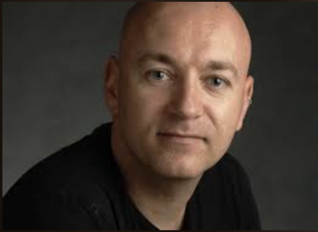

D. 11. Januar 22 - Mænd og feminisme - Mikkel Thorup - Valgm. Kirken
Praktisk information
Begivenheden finder sted
Tirsdag d. 11 Januar kl. 19.00
I Odense valgmenigheds Kirke.
Dette er et fællesarrangement
Med Odense Valgmenighed.

Om begivenheden: Mænd og feminisme - Mikkel Thorup
Mikkel Thorup har flere bøger bag sig, bl.a. ”Fjendskab” (i serien Tænkepause).
I 2021 udgav han ”Kønnets idehistorie”, en antologi. Mens han samlede antologien,
skrev han bogen ”Antifeminisme”, fordi han blev overrasket over,
hvor meget kvindehad, der er i offentliggjorte artikler og bøger.
”Vores offentlige debat er i disse år fyldt med #metoo, kønskvoter,
transrettigheder og unge feminister, der kræver deres ret.
Men også af kritik, modreaktioner, påberåbelser af naturlige
forskelle mellem kønnene og følelser af, at udviklingen går for langt og for hurtigt.
I dette oplæg vil jeg prøve at diskutere, hvad der sker på
køns- og seksualitetsområdet i disse år, særligt hvad der sker for mænd,
hvordan forskellige grupper af mænd oplever og reagerer på udviklingen, når det
nu ikke længere kun er kvindekønnet, der er til diskussion men i
stigende grad også mandekønnet.”